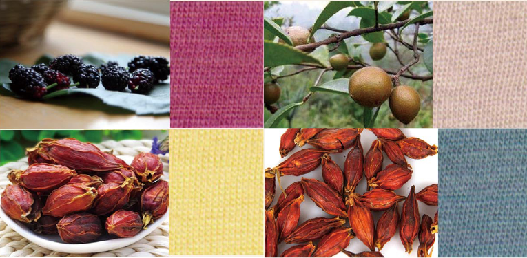
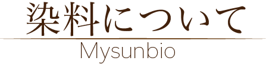
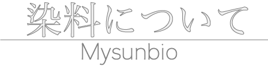
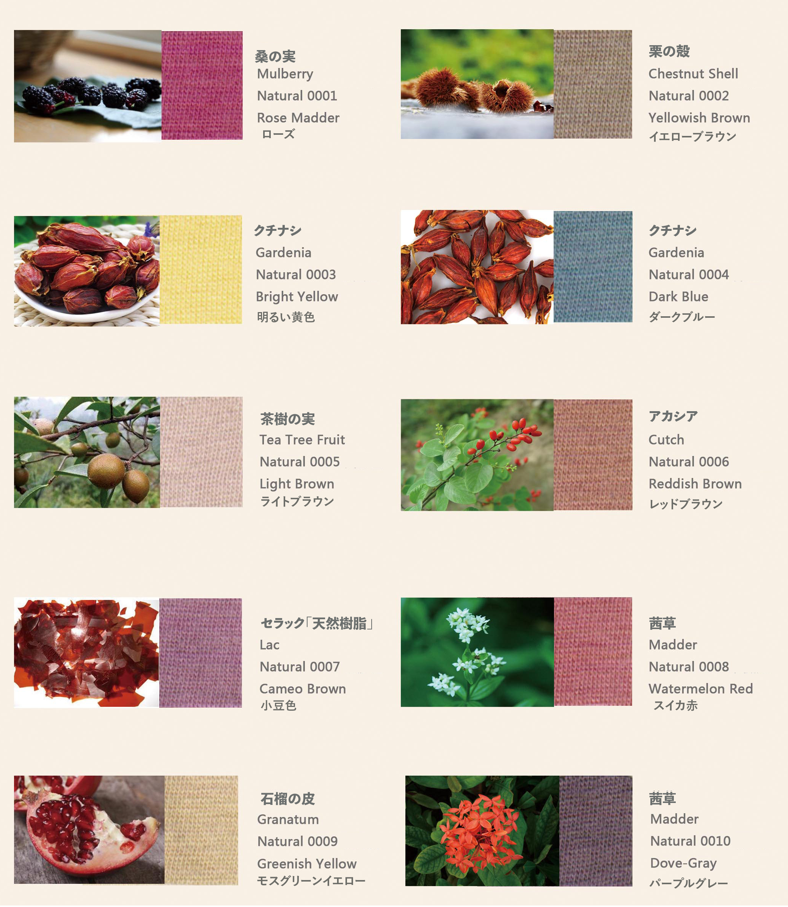
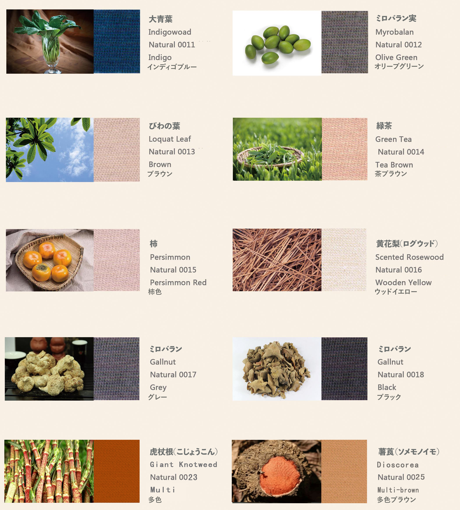
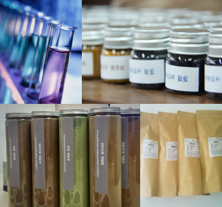

- 植物染料 ＆ 植物染め織物
植物染料は、植物の根、茎、葉、花、果実の殻から抽出した色素を染料とします。植物染料は生態環境との相性がよく、生物分解、無毒または低毒、原料再生が可能です。植物染料を開発して工業を自然に戻します。
植物の染色は大地の自然から源を発して、汚染がないため、人体に対していかなる毒の副作用を生みません、しかも肌にやさして、織物に天然の色と自然の草木のすがすがしい香りを与えて、気持ちを喜びます：多く染料を抽出する植物に用います、また一定の治療効果の薬草を備えて、織物の抗菌に炎症、快適な筋の血行などの医療保健の機能を与えて、健康な生活を持ってきます。
植物染料は綿、麻、糸、毛などの天然繊維の糸、生地、既製の染色に適用されます。化学合成染料に比べ、植物染料の色は自然の生命力を持っています。
- 原料とその色
■中国初、より高濃度、高品質のパウダー植物染料生産サプライヤーとして、植物染料の安定供給を可能に。
■植物染料及び植物染め織物は、第三者の検査機関によって環境保護製品であり、生態紡績品の基準に適合しており、GOTS認定製品であります。
■200種類以上の植物から選別された原料は青い草、栗殻、クチナシ、ザクロの皮、茜草、五倍子など。 安定した堅牢度を抽出して合格の20種類植物染料の製品は主にローズワイン、明るい黄色、深い青、茶色、藍の青い、灰色などがあります。
■植物染料製品は発明特許30件以上を申請し、特許18件を授権し、記事10編余りを発表しました。
■中国石化工業連合会の鑑定を経て、美勝植物染料プロジェクトの全体技術は国際先進レベルに達しました。
■抽出工場の操業は、品種と生産量の安定供給を効果的に保障することになりました。
■植物染料及び植物染め織物は、第三者の検査機関によって環境保護製品であり、生態紡績品の基準に適合しており、GOTS認定製品であります。
■200種類以上の植物から選別された原料は青い草、栗殻、クチナシ、ザクロの皮、茜草、五倍子など。 安定した堅牢度を抽出して合格の20種類植物染料の製品は主にローズワイン、明るい黄色、深い青、茶色、藍の青い、灰色などがあります。
■植物染料製品は発明特許30件以上を申請し、特許18件を授権し、記事10編余りを発表しました。
■中国石化工業連合会の鑑定を経て、美勝植物染料プロジェクトの全体技術は国際先進レベルに達しました。
■抽出工場の操業は、品種と生産量の安定供給を効果的に保障することになりました。


- 植物染料のパウダー
WorldSilverでは20色の染料を販売しております。
問い合わせ先：ワールドシルバ株式会社
担当：ゴエツ イサム
携帯：090-1730-6880

問い合わせ先：ワールドシルバ株式会社
担当：ゴエツ イサム
携帯：090-1730-6880